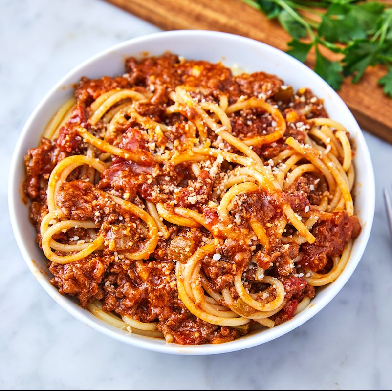

Bolognese Sauce

Description
This traditional Italian sauce is a family favorite. The fattiness of the beef and milk combines with the acidity of the tomatoes and earthiness of the vegetables to create a dish that is perfect for hot summer days or cozy winter evenings. The recipe can be easily doubled, tripled, or quadrupled, making it perfect for large gatherings - I have premade three portions to take on our 20-person family camping trips! Once you reach the simmer stage, low and slow is best. By the time it's done, your house will smell delicious.
Ingredients
- 1 tbsp extra virgin olive oil
- 2 cloves garlic, minced
- 1 yellow onion
- 1 red bell pepper
- 2 stalks celery
- 2 carrots, sliced, diced, or slivered
- 1 lb ground beef (substitute turkey if preferred)
- 1/8 tsp nutmeg
- 1 cup whole milk
- 1 cup dry white wine
- 1 15oz can tomatoes, whole or diced
- 1 bay leaf
- 1 lb tagliatelle (can substitute fettuccine, spaghetti, or rigatoni)
- Parmesan cheese
- Salt
- Pepper
Steps
- In a Dutch oven or other large pan, heat garlic in oil over medium heat until simmering.
- Add onion, chopped, and cook until transluscent.
- Add celery, carrot, and bell pepper. Cook until slightly softened, about 2-3 minutes. Stir regularly.
- Add meat, pinch of salt, and a few twists of a pepper grinder. Stir the meat to break apart and cook until brown.
- Turn down heat. While pan cools slightly, warm milk in microwave or on stove until nearly boiling. This will prevent the milk from curdling.
- Add the milk. Adjust heat until it is just simmering. Simmer until the liquid has evaporated and milkfat has absorbed into beef (may take 15-20 minutes at low heat).
- Stir in the nutmeg.
- Add the wine, simmer in a similar fashion to the milk.
- Add tomatoes & stir thoroughly. Turn stove down to the lightest simmer and leave for at least one hour, preferably three, ideally six or more.
- Serve over freshly cooked pasta with freshly grated Parmesan cheese.